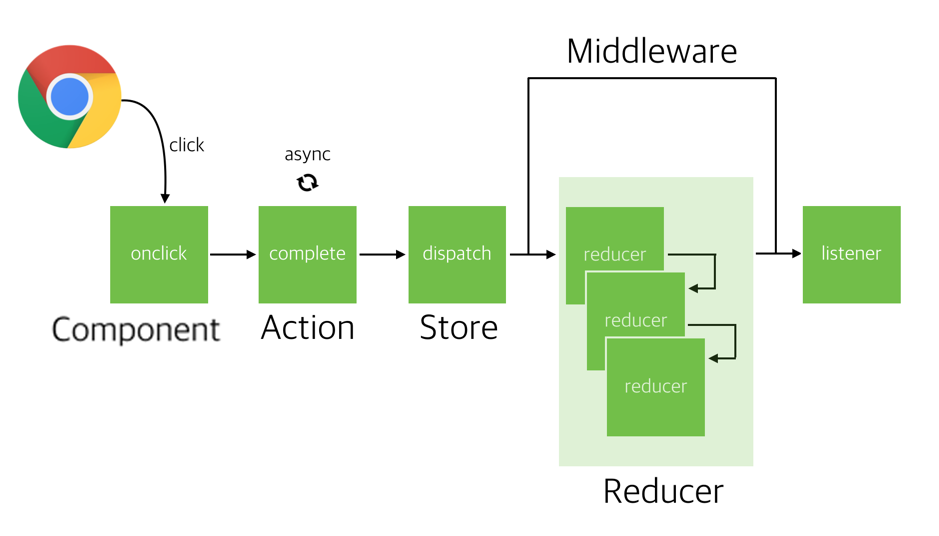

Redux 실행 순서
+─────────────────────+
| |
| ┏─ reducer1 ─┓ |
component ── action ── dispatch() ── middleware ─╋─ reducer2 ─╋─ state ── middleware ── subscribe() ── component
[in] └─ reducer3 ─┛ [out]
| |
| |
+─────────────────────+
action 객체:
type 속성이 있는 자바스크립트 객체다.
action의 type 속성에는 접두사를 붙인다. 이름 충돌을 피하기 위해서
action 상수:
action 함수: